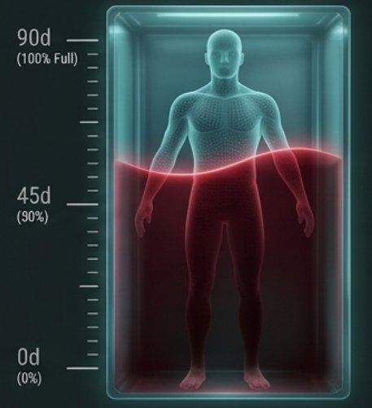

Donor Profile & Vital Health Stats
A+
POSITIVE
Awaiting Hospital Health Verification
Hemoglobin:
-- g/dL
•
PENDING
Blood Pressure:
--/-- mmHg
•
PENDING
Body Temperature:
--° F
HEALTH STATUS: AWAITING HOSPITAL HEALTH VERIFICATION
Medical Eligibility Tracker (3D Body Scanner)

90 DAYS
ELIGIBLE TO DONATE
100% RESTORED • READY
(optimal biological volume • ready to donate)
ELIGIBLE TO DONATE • READY
90-day wait period met
Health indicators optimal
Not currently on medication
Next Available: Immediate / READY
Donor Impact Milestones
Past Donation History
Verified Donation History Logs